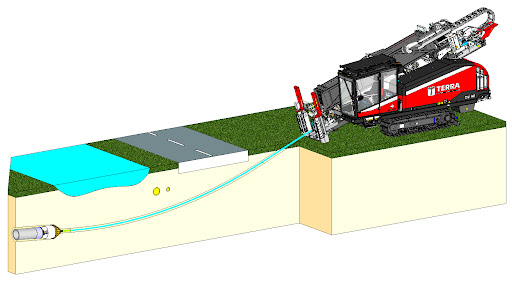
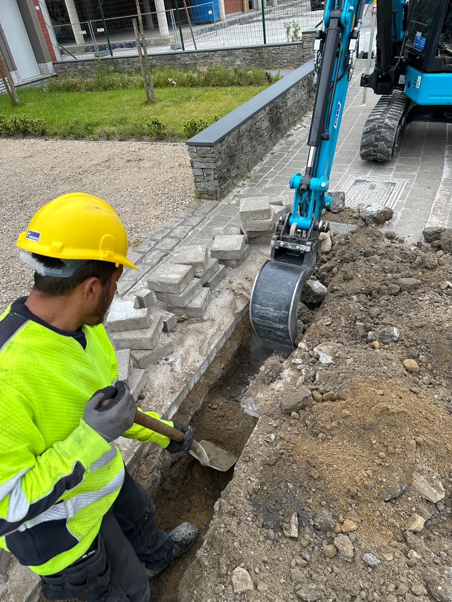
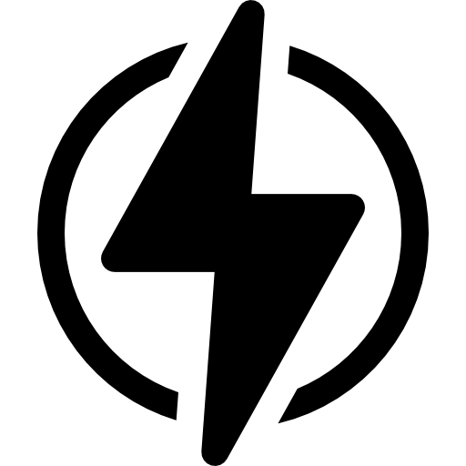
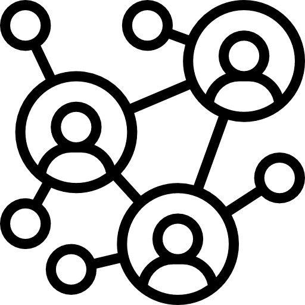
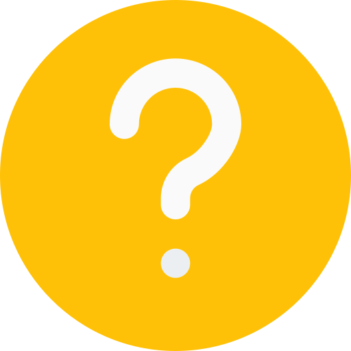

Voorbereiding en Planning
Bodemonderzoek om de samenstelling en
mogelijke obstakels te bepalen.
Opstellen van technische tekeningen
om het boortraject nauwkeurig te plannen.
Op vraag:
opmaken van prebuilt ter verduidelijking en/of goedkeuring
Uitvoering van de Boorwerkzaamheden
Pilootboring: Met een boormachine
wordt een pilootboring uitgevoerd.
Ruimen boorgat: Het boorgat
wordt vergroot om HDPE buizen door te trekken.
Producttrek: De uiteindelijke leiding
of kabel wordt door het boorgat getrokken.
Aanleveren van asbuilt


Voorbereiding en Planning
Grondanalyses om de bodemgesteldheid
en obstakels te identificeren.
Tekenen en plannen om de graafdiepte
en veiligheidsmaatregelen te bepalen.
Implementeren van strikte
veiligheidsmaatregelenen (wettelijk als persoonlijk).
Uitvoering van de Graafwerkzaamheden
Markeren: Afbakenen en markeren van
de graafzone volgens de plannen.
Signalisatie: Duidelijke signalisatie
om de veiligheid maximaal te waarborgen.
Graven: Graafwerkzaamheden worden
uitgevoerd met machines en manueel.
Afwerken: Het gebied wordt
geëgaliseerd en hersteld, waarbij alle materialen milieuvriendelijk worden afgevoerd
.
Alle onderstaande diensten kunnen worden uitgevoerd met zowel horizontaal gestuurd boren (HDD) als traditionele graafwerken.
Waterleidingen kunnen efficiënter gelegd worden doormiddel van horizontaal gestuurde boringen.

Elektriciteitkabels van elke soort zijn makkelijker te leggen dankzij onze boringen.

Allerlei communicatiekabels, TV, internet en meer kunnen door Kale-Tech getrokken worden.
